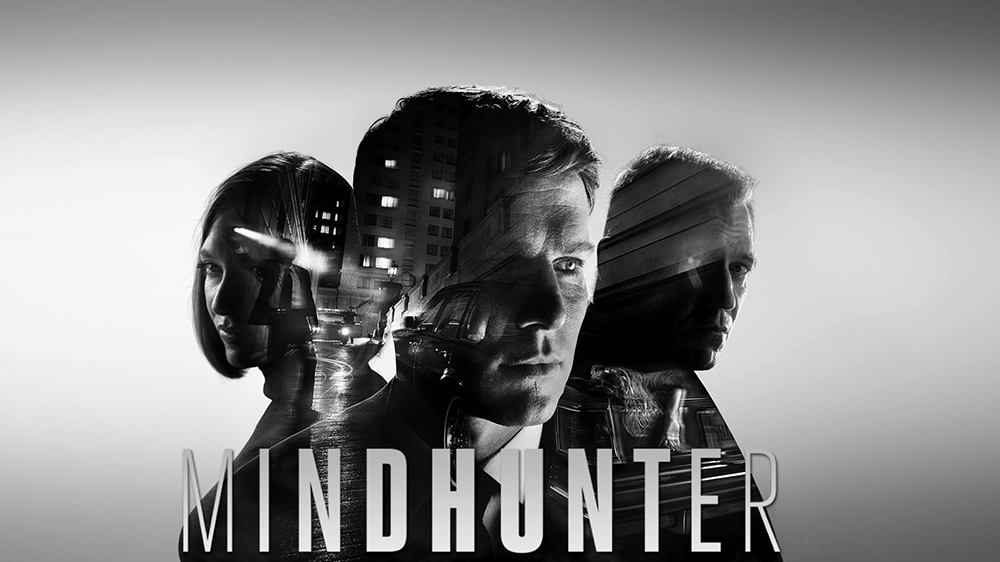

| Миний хобби | Зураг/ Видео | Тухай |
|---|---|---|
| Миний үзэх дуртай кино- Mindhunter |  | Энэхүү кино нь "Холбооны мөрдөх товчоо"-ы "Зан үйл судлалын хэлтэс"-н мөрдөгчид цуврал гэмт хэрэгтний сэтгэл зүйн зураглал, зан үйлийн дүр төрхийг хэрхэн тодорхойлох арга боловсруулж байсан тухай бодит баримт болон бодит хүмүүсийн амьдралаас сэдэвлэсэн маш сонирхолтой цуврал юм. |
| Миний сонсох дуртай хамтлаг- Rage Against The Machine | Rage Against The Machine нь 1991 онд АНУ-д байгуулагдсан. Реп метал, реп рок, альтернатив метал хамтлаг юм. Тэдний хөгжим улс төрийн, активист агуулгатай байдаг. |